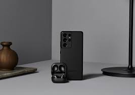
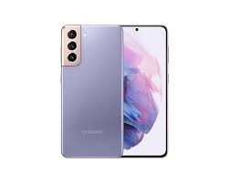
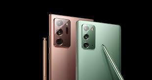
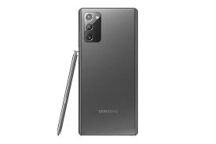
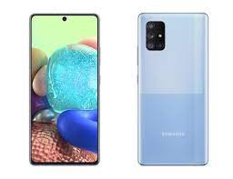

Samsung Galaxy S21 Ultra
El diseño elegante y tipo matte del S21 Ultra es uno de los más destacados de toda la línea de Samsung.
Este equipo llega con una pantalla AMOLED 2x dinámico de 6.8 pulgadas y con sus 227 gramos de peso,
es una bestia de teléfono. Aún así, se trata de un dispositivo más pequeño que el Note 20 Ultra y su antecesor,
el S20 Ultra que llega en colores que incluyen negro, plateado y tres ediciones especiales cargados al metálico: azul marino, titanio y café.
Por otra parte, la batería es de 5,000 mAh y permite usarlo por un día completo si ves mucho video o juegos,
y hasta dos días completos en tareas más triviales. Además, tiene carga rápida de 25W,
con lo que en pocos minutos estará listo para usarlo de nuevo en caso de que la batería se agote.
|

Samsung Galaxy S21
Si no te alcanza el presupuesto para el S21 Ultra, debes saber que el S21 es una excelente
alternativa que cuesta $300 dólares menos. Es algo más compacto que el modelo ganador y con
una pantalla de 6.2 pulgadas, pero opera sobre el mismo procesador Snapdragon 888. Eso sí,
la batería es algo más pequeña (4,000 mAh), por lo que la duración de una carga es algo más limitada;
además, la cámara principal tiene solo tres lentes y no cuatro. Es también más liviano que el
S21 Ultra con sus 171 gramos, por lo que si prefieres equipos más compactos que puedas utilizar
con una sola mano, el Galaxy S21 puede ser la mejor opción.
|

Samsung Galaxy Note 20 Ultra
No se trata en ningún caso de un equipo pequeño y con toda seguridad tendrás
que usarlo con las dos manos. Aún así, el Galaxy Note 20 Ultra es super liviano
y delgado, con un peso de apenas 208 gramos, más una pantalla AMOD de
3088 x 1440 pixeles de resolución y certificada para HDR10+ más tasa de
refresco variable que se adapta de forma automática, dependiendo de lo que
hagas con el equipo: por ejemplo, en los juegos compatibles funciona a 120 Hz,
mientras que en películas o videos lo hace a 60 Hz para ahorrar batería
(aunque siempre se puede ajustar a 60 Hz).
|

Samsung Galaxy Note 20
Galaxy Note 20, que cuesta cerca de $800 dólares. Es algo más pequeño que el Note 20 Ultra,
con pantalla de 6.7 pulgadas y 2400 x 1080 píxeles, 8 GB de RAM y el mismo procesador
que el Note 20 Ultra. Eso sí, solo existe la opción de 256 GB de almacenamiento interno
y sin la chance de expandirlo mediante una tarjeta microSD al no contar con la ranura
correspondiente (aunque está la opción de un modelo con 512 GB también).
La batería es de 4,300 mAh y además incluye un cargador de 25W, más soporte para carga inalámbrica a 14W.
|

Samsung Galaxy A71 5G
El Galaxy A71 5G opera con el procesador Snapdragon 765, que entrega un muy buen rendimiento
en multitarea o en videojuegos, además de sus 6 GB de RAM y 128 GB de almacenamiento interno
que se puede expandir hasta 1 TB con una tarjeta microSD. La batería de 4,500 mAh está por sobre
la media en un teléfono de este segmento y debería dar hasta un día completo de duración. Además,
en la caja se incluye un cargador de 25W que recarga el 50% de la batería en alrededor de 30 minutos;
eso sí, no tiene carga inalámbrica, pero sí hay un puerto de audífonos de 3.5 mm.
Si hablamos de la cámara el A71 5G tiene un lente cuádruple: el sensor principal es de 64 MP,
además de un lente ultra gran angular de 12 MP, un lente macro de 5 MP y un sensor de profundidad de 5 MP.
|
Samsung Galaxy A50
Por menos de $300 dólares, tenemos una pantalla Super AMOLED de 6.4 pulgadas con resolución de
2,340 x 1,080 pixeles, además del procesador Exynos 9610, 4 GB de RAM y 64 o 128 GB de almacenamiento
interno, ampliable hasta 512 GB por medio de una tarjeta microSD. El chip se puede comparar con el
Snapdragon 670 (utilizado en el Google Pixel 3a); aunque ofrece un rendimiento destacado,
la unidad puede llegar a “calentarse” un poco cuando se juegan títulos recientes.
El A50 cuenta con un conector (jack) para auriculares y una cámara triple compuesta
por un sensor de 25 megapíxeles, ultra gran angular de 8 megapíxeles y lente de profundidad de 5 megapíxeles,
además de una cámara frontal de 25 megapíxeles. La batería de 4,000 mAh proporciona
suficiente energía para un día completo, sin embargo, la carga es un poco más lenta en
comparación con los teléfonos insignia de Samsung: 15 watts.
|